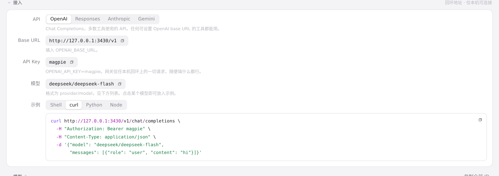

#373 界面预览
commit 2bb0b49 · 回到 PR · 网关页的「接入」区不再固定显示 magpie：它按公开地址（MAGPIE_PUBLIC_URL）和局域网共享状态显示不同的 API Key、说明文案，并把该 Key 用进各 API 的 Shell/curl/Python/Node 示例与复制按钮（后端在 /api/providers 的 gateway 里新增 lan/lanKey/open，url 改用 PublicURL()）。中文界面里的「API 密钥」「密钥」也改成了「API Key」「Key」。
红线是鼠标走过的轨迹，红色圆环是一次点击；底部文字是这一步在做什么。空格暂停，← → 逐段查看。
网关页接入区的 Key 与示例 · 网关页的「接入」区：API Key 一行与提示文案

网关页接入区的 Key 与示例 · curl 示例里的地址与 Key
网关页接入区的 Key 与示例 · Anthropic 下的 Base URL、API Key 与示例
开启局域网共享后的接入区 · 设置里的「局域网共享」一行
开启局域网共享后的接入区 · 开启共享后网关页的接入区